> FEATURE — Turkey 2026 sabbatical
Main feature, Cycle 7: photographs and a short summary from John’s September 2026 trip through Istanbul, Cappadocia, Mount Nemrut, Göbekli Tepe, Ephesus, and the Lycian coast. Photos pulled from johndilworth.com/turkey (the link left on the Cycle 6 review board).
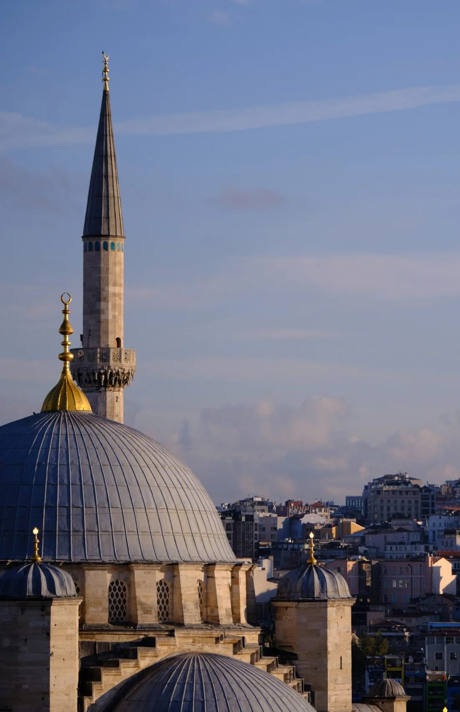
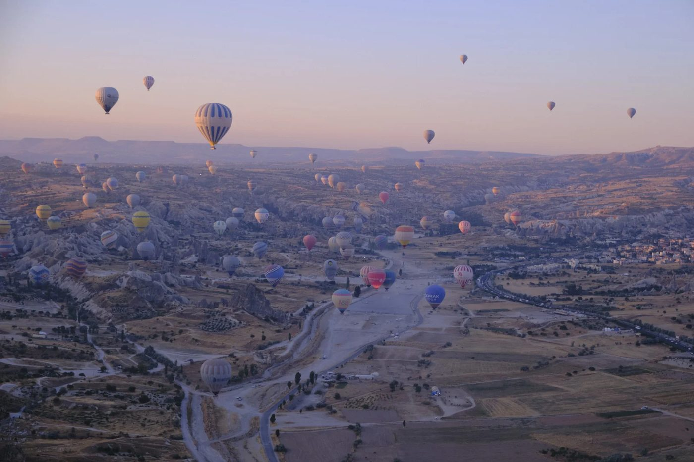
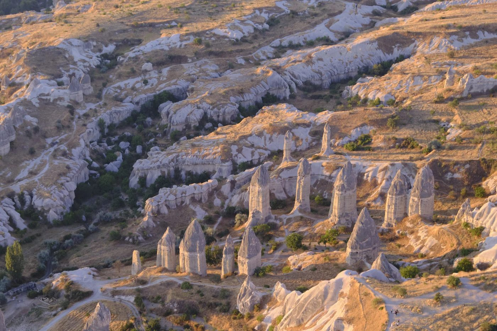
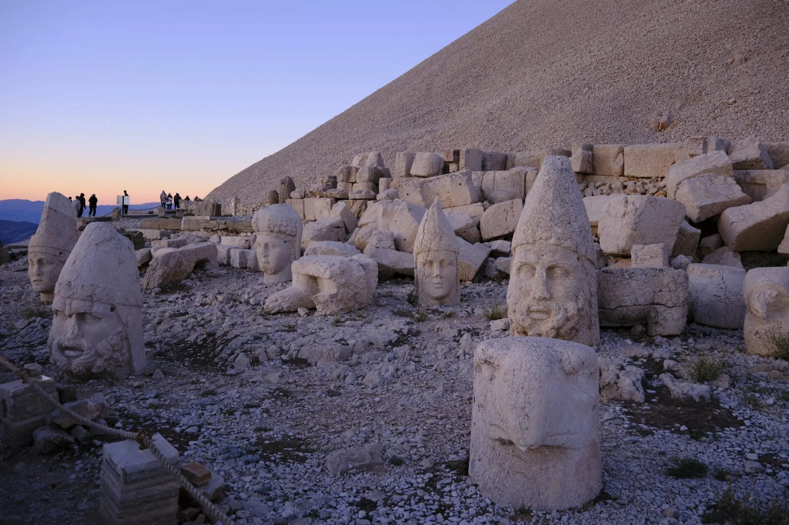
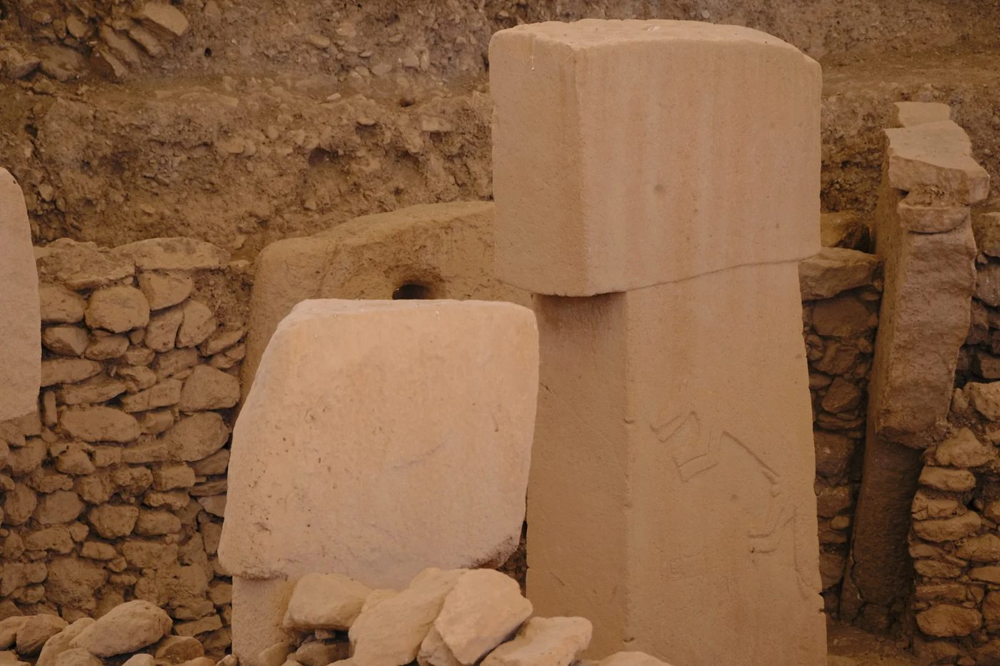
A September 2026 sabbatical loop: dusk over Süleymaniye and Galata, cats in Sultanahmet, balloons over Cappadocia’s fairy chimneys, the stone heads of Nemrut at last light, and the carved pillars of Göbekli Tepe — then Ephesus and the Lycian coast. Sticky ask: showcase the trip as the main feature; photos and summary from the Turkey 2026 site.
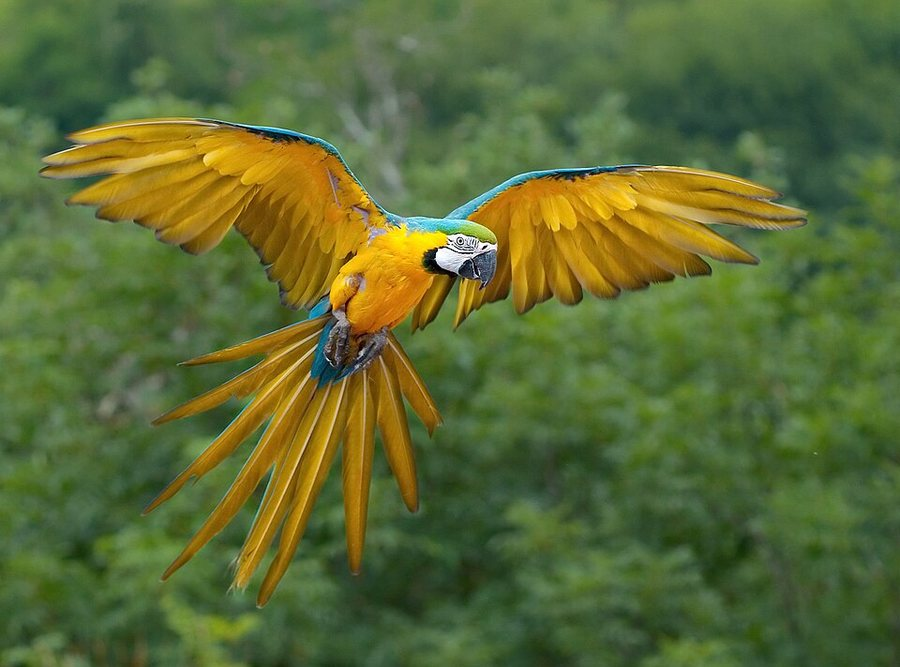
> PARROT.EXE — long-uptime talkers
Parrots run a loud, social OS: big brains for their size, feet with two toes forward and two back for gripping like a hand, and a curved beak that cracks nuts like a multi-tool. There are roughly 400 species, from pocket-sized budgies to the flightless kākāpō. Big macaws and cockatoos can stay online for 50–80 years, so adopting one is a multi-decade commitment, not a weekend install. They learn by copying the flock, which is why a pet parrot ends up repeating its humans: voice cloning, but with feathers.
> COUCH_CORNER — null-space recovery
That awkward gap where two couches meet is dead air in the living-room topology. Reclaim it:
- Jungle Tower — tall plant + string lights → mini rainforest node.
- Reading Nook — cushions, lamp, comics → offline hideout.
- Pet Palace — soft bed + toys; cat/dog claims root.
- Art Corner — tiny easel or rotating doodle board.
- Snack Dock — low tray table for popcorn during movie night.
// reference captures
.jpg){kind=link}


> SPIRAL.φ — classical recursion
Our spiral is the golden spiral drawn over classic artworks. Every quarter-turn grows by φ ≈ 1.618 — the same ratio that shows up in shells, galaxies, and bad slide decks about “nature’s algorithm.” Click through the gallery (or use ◀ ▶) to see where it lands in each picture.
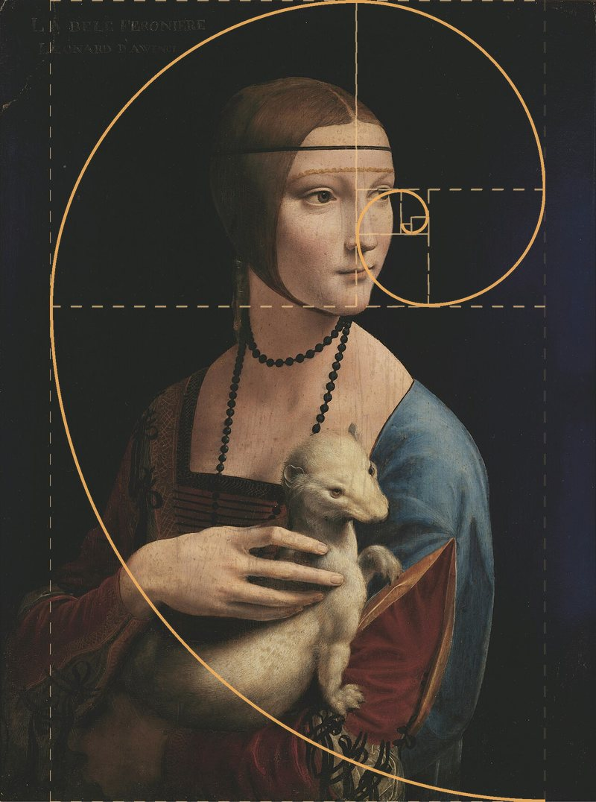

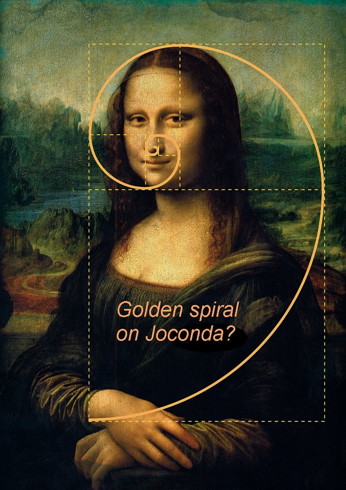

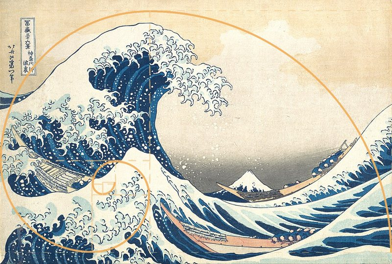

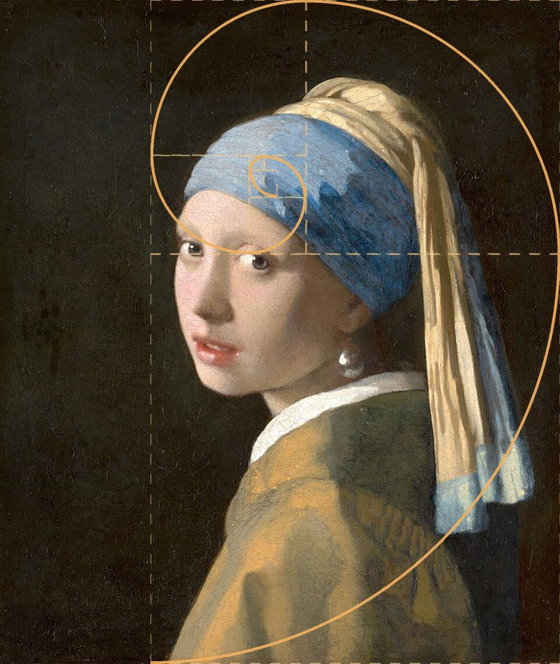

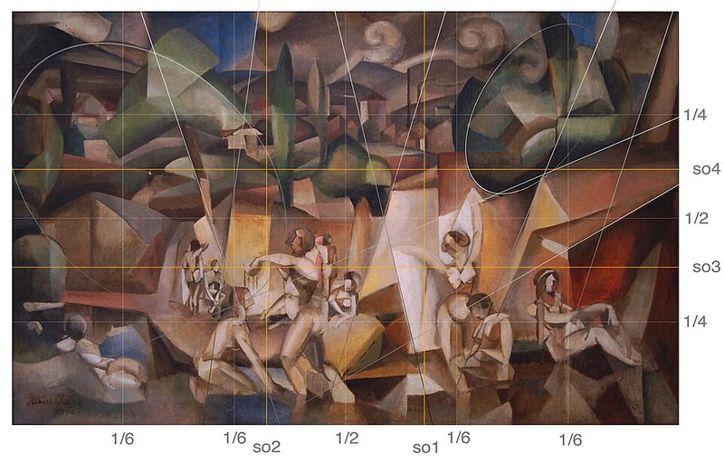
,_oil_on_canvas,_105_x_171_cm,_Mus%C3%A9e_d%27Art_Moderne_de_la_Ville_de_Paris,_golden_rectangle_and_Fibonacci_spiral.jpg){kind=link}
> STATUS — under construction (intentional)
★ best viewed in any terminal ★
This site used to look like GeoCities + MySpace + sticker notebook. Cycle 4 reboots it as retro-tech terminal: monospace, square panels, ASCII noise, green-on-black energy. Stickies still drive the build.
> MOTD — who we are now
╔══════════════════════════════════════════╗ ║ ENTROPY COLLECTIVE · HARVEST NODE ║ ║ media · extinction · media laws · φ ║ ║ leave stickies · we apply the safe ones ║ ╚══════════════════════════════════════════╝
Renamed from the playground kids brand. Same sticky → PR loop. New skin: Share Tech Mono, square frames, no toddler rotations.